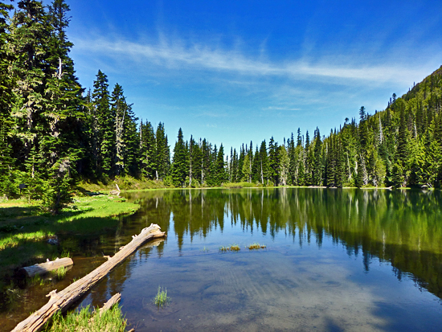

Happy little....
Now we can begin working on lots of happy little things. You can do anything here - the only pre-requisite is that it makes you happy. This is the way you take out your flustrations. Talk to trees, look at the birds. Whatever it takes. Get tough with it, get strong. If it's not what you want - stop and change it. Don't just keep going and expect it will get better.
Clouds
Think about a cloud. Just float around and be there. You can create anything that makes you happy. This is probably the greatest thing to happen in my life - to be able to share this with you. Put light against light - you have nothing. Put dark against dark - you have nothing. It's the contrast of light and dark that each give the other one meaning. Just take out whatever you don't want. It'll change your entire perspective. Now let's put some happy little clouds in here.

Stream
I thought today we would make a happy little stream that's just running through the woods here. This is your world, whatever makes you happy you can put in it. Go crazy. No pressure. Just relax and watch it happen. Everyone needs a friend. Friends are the most valuable things in the world. You can work and carry-on and put lots of little happy things in here. You don't have to spend all your time thinking about what you're doing, you just let it happen.

Bushes
Let's put some happy little bushes on the other side now. These little son of a guns hide in your brush and you just have to push them out. Let's put a touch more of the magic here. That's crazy. We'll play with clouds today. There is immense joy in just watching - watching all the little creatures in nature.
Mountain
Let's make a happy little mountain now. You can do anything here. So don't worry about it. How to paint. That's easy. What to paint. That's much harder. Let all these things just sort of happen. In your world you have total and absolute power. You want your tree to have some character. Make it special.
Trees
Little trees and bushes grow however makes them happy. Just let this happen. We just let this flow right out of our minds. This is gonna be a happy little seascape. Don't fiddle with it all day. You don't want to kill all your dark areas they are very important.
Practice
Talent is a pursued interest. That is to say, anything you practice you can do. Each highlight must have it's own private shadow. We wash our brush with odorless thinner. It's beautiful - and we haven't even done anything to it yet. You're meant to have fun in life.
Slow down
Take your time. Speed will come later. There we go. Let's give him a friend too. Everybody needs a friend. Anyone can paint. The shadows are just like the highlights, but we're going in the opposite direction.
Lake
Pretend you're water. Just floating without any effort. Having a good day. Here's something that's fun. A beautiful little sunset. See. We take the corner of the brush and let it play back-and-forth. We'll throw some old gray clouds in here just sneaking around and having fun. It's important to me that you're happy.
